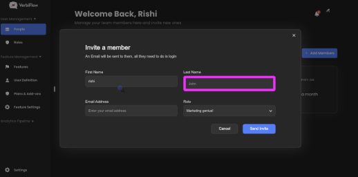

Navigate Youth Conservation Corps Program Web...
Share & Export
Personalize
Export
Share
Embed
Export to PDF
Export to PDF
T
Test123
5 minutes ago
Public
Public
Private
Sites Used:
National park Service
HI, Ris
From: on TheFly Wiki company
1
Visit
Youth Conservation Crops - Youth & Young Adult Programs (U.S. National Park Service)
2
Check on "Recreation"
